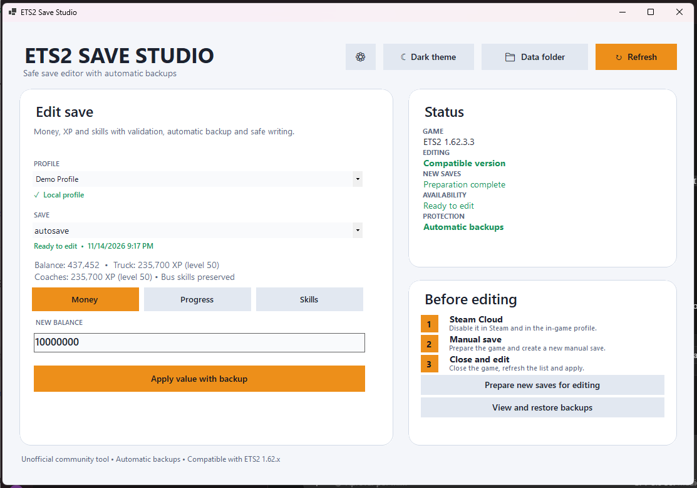

Editor de dinheiro
Carregue o saldo atual, informe o total final desejado e confira uma prévia monetária regional.
Feito para a estrada à frente
Editor de save ETS2 1.62 grátis para Windows x64.
Ferramentas objetivas
Ferramentas objetivas para saves locais compatíveis, com validação, backups automáticos e restauração no aplicativo.
Carregue o saldo atual, informe o total final desejado e confira uma prévia monetária regional.
Edite a progressão de caminhão com valores atuais detectados e um fluxo objetivo e validado.
Gerencie a progressão de Coaches quando a DLC correspondente estiver instalada ou a configuração manual estiver ativa.
Configure as seis habilidades clássicas de caminhão em uma única tela simplificada.
Crie backups automáticos antes de uma edição bem-sucedida e restaure-os dentro do aplicativo.
Use português brasileiro ou inglês e alterne entre os temas claro e escuro sem reiniciar.
Prévia do aplicativo
Veja o perfil selecionado, o status do save, os valores atuais e as proteções antes de aplicar uma alteração.

Segurança e backups
O ETS2 Save Studio foi criado para reduzir riscos antes, durante e depois de uma edição compatível.
game.sii anterior é copiado antes de uma edição bem-sucedida.Importante: as proteções reduzem riscos, mas não evitam toda falha de hardware, conflito de mods ou mudança futura do jogo. Mantenha cópias independentes dos saves importantes.
Tutorial de edição segura
Prepare um save local compatível, altere apenas valores suportados, confira o resultado no ETS2 e mantenha uma opção de recuperação.
Limitação da Steam Cloud: esta beta bloqueia intencionalmente perfis identificados em armazenamento da Steam Cloud. Use um fluxo local e confirme que a sincronização está desativada antes da edição.
Release oficial
Escolha o instalador para uma configuração simples ou o ZIP portátil para executar em uma pasta sob seu controle.
Versão 1.0.0-beta.1 · Não exige instalação separada do .NET. Os checksums estão disponíveis na Release oficial do GitHub.
Dúvidas frequentes
Compatibilidade, Steam Cloud e os detalhes importantes para uma primeira execução segura.
Sim. O ETS2 Save Studio é um freeware gratuito de código-fonte fechado. O uso e a redistribuição são regidos pela licença disponível no repositório público.
Esta beta foi homologada para Euro Truck Simulator 2 1.62.x no Windows 10 ou Windows 11 x64. A edição é bloqueada intencionalmente em versões do jogo não homologadas.
Não. Perfis da Steam Cloud não podem ser editados com segurança nesta versão. Desative a sincronização no Steam e no perfil dentro do jogo e trabalhe com um save local.
Não. Os pacotes instalável e portátil são self-contained, então não é necessário instalar o .NET separadamente.
Não. O aplicativo não compra, ativa ou desbloqueia DLCs. A detecção de Coaches depende da DLC instalada ou da configuração manual do aplicativo.
Use o GitHub Issues no repositório público. Informe as versões do aplicativo, ETS2 e Windows e a mensagem de erro exata, mas não envie saves pessoais ou caminhos privados.